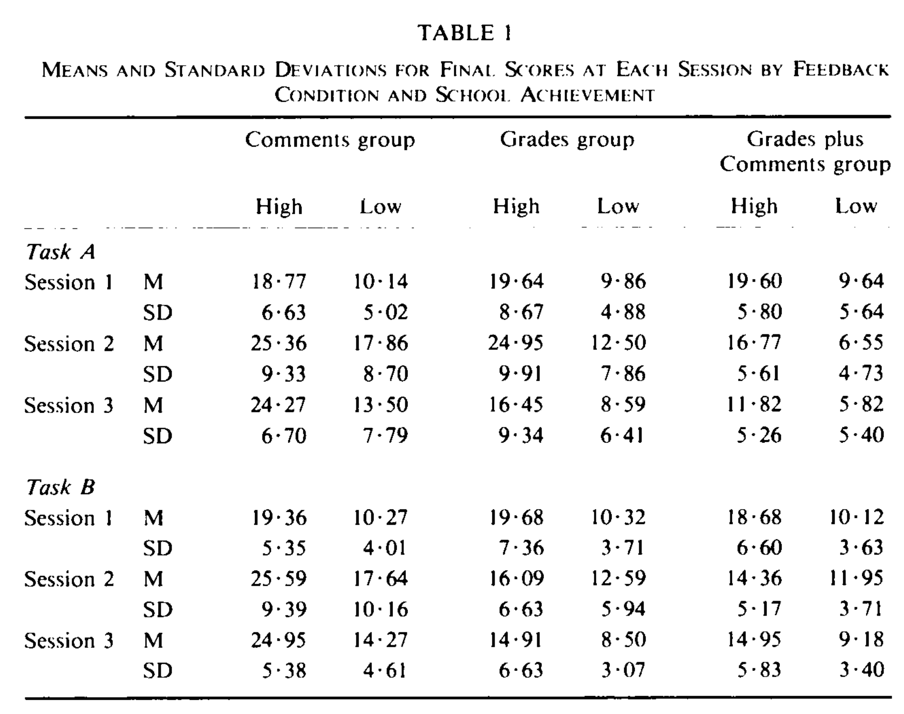
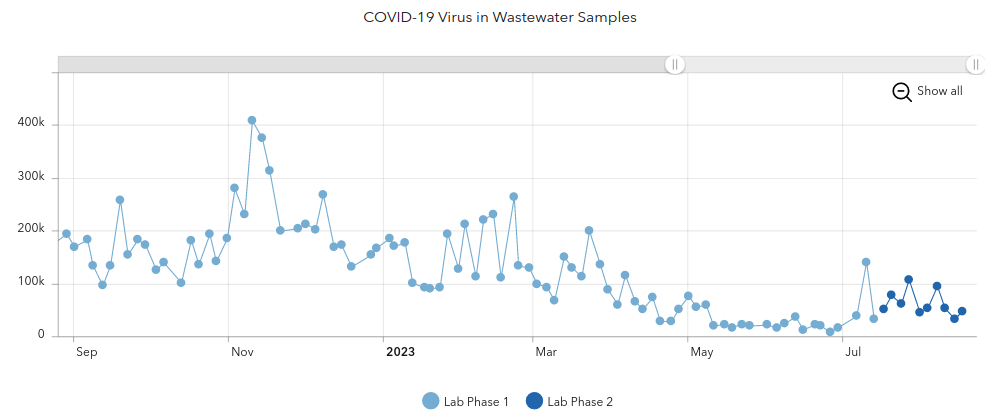

2023-08-28 First Day#
CSCI-5636: Numerical solution of partial differential equations (PDE)#
Instructor: Jed Brown, jed.brown@colorado.edu, ECOT 824#
Meeting: Mon, Wed, Fri at 1:25-2:15p in ECCS 1B14 (and virtually)#
What are PDE?#
partial derivatives#
Gradient \(\mathbf g(\mathbf x) = \nabla u(\mathbf x)\)
scalar field to vector field
Curl \(\mathbf c(\mathbf x) = \nabla\times \mathbf g(\mathbf x)\)
vector field to vector field
Divergence \(d(\mathbf x) = \nabla\cdot \mathbf c(\mathbf x)\)
vector field to scalar field
time derivatives: \(\frac{\partial u(t, \mathbf x)}{\partial t}\)
what do they describe?#
heat transfer
electrostatics, electromagnetics
solid mechanics
fluid mechanics
quantum mechanics
population dynamics
Find \(u\) such that
Structural mechanics#
What does it mean to discretize a PDE?#
Find \(u\) such that
How is it satisfied?#
At grid points with rules to approximate derivatives
Finite Difference / collocation
A weak (integral) over elements with rules to reconstruct from element averages and define fluxes
Finite Volume
A weak form over elements with solution and “test functions” in the same space
Finite Element / Galerkin
How expensive is it?#
Suppose our domain is \(\Omega = (0, 1)^3\)
using Plots
# a common "good" discretiation
error(h) = min(1, 10*h^4)
function cost(h)
n = 1/h # number of points per dimension
N = n^3 # total number of grid points in 3D
N
end
function cost2(h)
N = cost(h)
N^2
end
cost2 (generic function with 1 method)
plot([cost, cost2], error, .01, 1, xscale=:log10, yscale=:log10,
xlabel="Cost", ylabel="Error")
What goes in? What comes out?#
Equations
Conservation
Variational principles
Materials
Geometry
meshing needed?
Boundary conditions
essential/Dirichlet
natural/Neumann
mixed
Initial conditions
Discrete solutions
Sampled on a grid
Time series
Quantities of Interest (QoI)
Heat flux
Maximum temperature
Maximum stress
Lift, drag
Eigensolutions
Resonant frequencies/modes
Orbitals
Who works with PDE solvers?#
Numerical analysts
Domain scientists and engineers
Materials scientists
HPC specialists
Optimizers
Statisticians
What skills should they have?#
Breakout groups: pick one role and make a list of essential and nice-to-have skills, plus at least one question. Pick one member to report out.
…
…
Computer Science = Runnable Abstraction Science#
In the “grinder”#
Mathematical language and principles for each major class of method
What is covered by theory
When you’re venturing off-trail
Analytic tools to predict and debug
Realistic cost and exploitable structure
Performance on modern hardware
Algebraic solvers and time integrators
Write/modify stand-alone code
Select and use (parallel) libraries
How can you trust the solution?#
Verification: solving the problem right
Validation: solving the right problem
Abstractions/collaboration#
Domain scientists, engineers
Optimizers, statisticians
Abstractions that reduce cognitive load
Metrics/visualization for decisions
On programming languages#
C#
Reliable and popular for libraries (PETSc, etc.). “Simple”, unsafe, capable of encapsulation.
C++#
Popular with applications and some libraries. Powerful, but complicated and unsafe.
Fortran#
The OG of numerical computing. Good for “array programming”, but encapsulation is hard. Unsafe depending on dialect.
Julia#
For ground-up examples in class and in activities. Capable of high performance, expressive multiple dispatch, works well in a notebook. Library ecosystem for PDEs is limited, but rapidly improving.
Python#
Good access to JIT, libraries like FEniCS. Poor native performance, but good libraries to compiled code.
Rust#
New compiled language. Good performance, encapsulation, safety, static analysis. Poor libraries (so far).
You don’t need to know any of these well and you can choose the language for your project.
Intrinsic motivation#
{kind=link}
I won’t grade and I won’t waste your time#
I will provide feedback
I will be a mentor and guide navigating this field
I will help you get what you want out of the class (with a dash of wholesome context)
My mom said, “basically, your professor is asking you to be an adult”. That was too flexible.
In other classes, I didn’t feel like I could bounce back, but in this one I did.
What about the letter grade?#
Collect a portfolio of the work and insights you’re most proud of
Individual meetings during the last week of the semester (mid-term preview)
We’ll have a conversation and you’ll propose a grade based on your portfolio
I’ll trust you.

I can nudge upward when students are too modest – pretty common. In rare cases, I may adjust down.
What I need from you: Growth Mindset#

How will the semester look?#
Lecture periods#
Refresh, introduce, activity/group discussion, reflect
Pointers to further resources/activities
In-class and homework activities#
(Short) coding, experiments, presentation of results
Use the math and programming tools of the field
Open-ended, go further occasionally
Learning plans#
Write, track, and revise a personal learning plan.
Meet/chat approx weekly to check in with partner
Projects (second half of semester)#
Dig into community software for solving PDEs
Short presentation on how the community works
Key stakeholders
Strengths and weaknesses
Discuss and critique
Community contribution#
Tutorial, documentation, performance study, comparison, new features, new application
Reflect in a short presentation
Tools#
Git and GitHub#
GitHub CLassroom to manage repositories
Write using notebooks and markdown
Review using GitHub tools and nbgrader
Jupyter#
RISE slides available on website
Activities with scaffolding
Nbgrader for writing feedback
Works with many languages; we’ll mostly use Julia
Collaborative mode (new)
JupyterHub: coding.csel.io#
Nothing to install, persistent storage
A note about illnesses#
There is a new covid variant circulating.
Updated vaccines aren’t available yet.
High-quality masks are effective.
You’re welcome to attend virtually (and please do if you have symptoms or have had exposures).
Resources#
CDPHE Wastewater Data by county
I have a 3yo in childcare and a 6yo in first grade.
Illnesses circulate often and sometimes they need to stay home.
I’ll likely need to teach remotely at some times, or otherwise make it up to you

Choices in scoping the class#
Theory#
Analysis first, confirm using numerics. Limited to simpler models.
Applied#
Numerics first, pointers to useful theory.
Build from scratch#
Limited to simpler models, but you’ll understand everything under the hood.
Build using libraries#
More installation and software layers, but can solve more interesting problems.